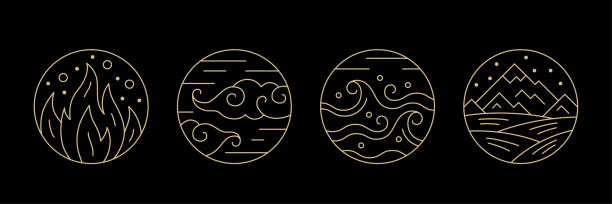

Tällä sivustolla on runokoelmani, jonka teema on elementit. Pääelementtejä ovat Vesi, Tuli, Maa ja Ilma. Jokaiselle niistä olen luonut yhden runon. Elementeissä on omaa voimaa ja oma luonne, jota olen yrittänyt välittää runojen kautta.
Elementeistä tulee mieleen erilaisia adjektiiveja, sanoja tai teemoja. Sanoja ja teemoja, joita liitin veteen olivat kyyneleet, kaiho, suru, puhdistuminen. Tuleen taas liekit, energia, tuho, tuhka. Maahan liitin sanat lämpö, kukat, niityt, muistot. Ilmaan liitin teeman uudet tuulet, tuulen viemää.
Pääset navigoimaan tästä: